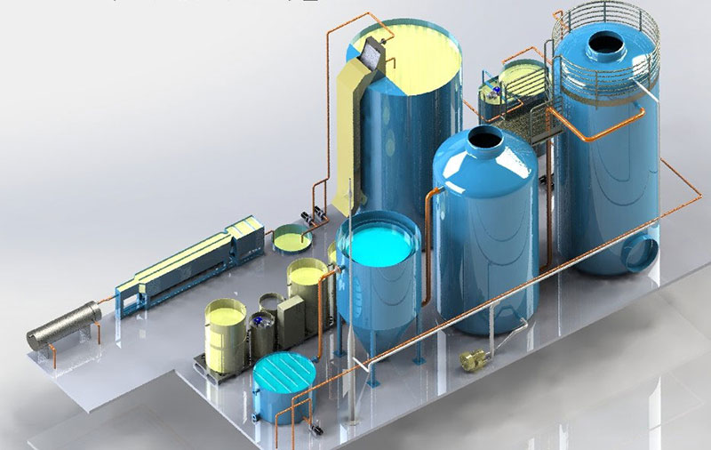

Aenean porta, justo non aliquet interdum, risus nibh fringilla orci, nec lacinia justo sem a lorem. Pellentesque sagittis finibus risus, vitae viverra metus commodo quis. In sed elit cursus, tincidunt lectus vel, mattis dolor. Donec vel libero lobortis, cursus turpis a, scelerisque lorem.
Aliquam auctor risus in velit hendrerit commodo. Suspendisse risus urna, tincidunt vitae leo nec, dignissim ullamcorper turpis. Sed tempus tincidunt laoreet. Nam laoreet consectetur dignissim. Pellentesque condimentum maximus neque, eget mattis justo porttitor id.
Aenean porta, justo non aliquet interdum, risus nibh fringilla orci, nec lacinia justo sem a lorem. Pellentesque sagittis finibus risus, vitae viverra metus commodo quis. In sed elit cursus, tincidunt lectus vel, mattis dolor. Donec vel libero lobortis, cursus turpis a, scelerisque lorem.
Até 2030, modernizar a infraestrutura e reabilitar as indústrias para torná-las sustentáveis, com eficiência aumentada no uso de recursos e maior adoção de tecnologias e processos industriais limpos e ambientalmente corretos;com todos os países atuando de acordo com suas respectivas capacidades
Fortalecer a pesquisa científica, melhorar as capacidades tecnológicas de setores industriais em todos os países, particularmente os países em desenvolvimento, inclusive, até 2030, incentivando a inovação e aumentando substancialmente o número de trabalhadores de pesquisa e desenvolvimento por milhão de pessoas e os gastos público e privado em pesquisa e desenvolvimento
Facilitar o desenvolvimento de infraestrutura sustentável e resiliente em países em desenvolvimento, por meio de maior apoio financeiro, tecnológico e técnico aos países africanos, aos países menos desenvolvidos, aos países em desenvolvimento sem litoral e aos pequenos Estados insulares em desenvolvimento
Aumentar significativamente o acesso às tecnologias de informação e comunicação e se empenhar para oferecer acesso universal e a preços acessíveis à internet nos países menos desenvolvidos, até 2020
Propostas
Principal forma sustentável adotada por pequenas e médias indústrias
Formas de aumentar a inclusão digital em países que estão em desemvolvimento
Aenean porta, justo non aliquet interdum, risus nibh fringilla orci, nec lacinia justo sem a lorem. Pellentesque sagittis finibus risus, vitae viverra metus commodo quis. In sed elit cursus, tincidunt lectus vel, mattis dolor. Donec vel libero lobortis, cursus turpis a, scelerisque lorem.